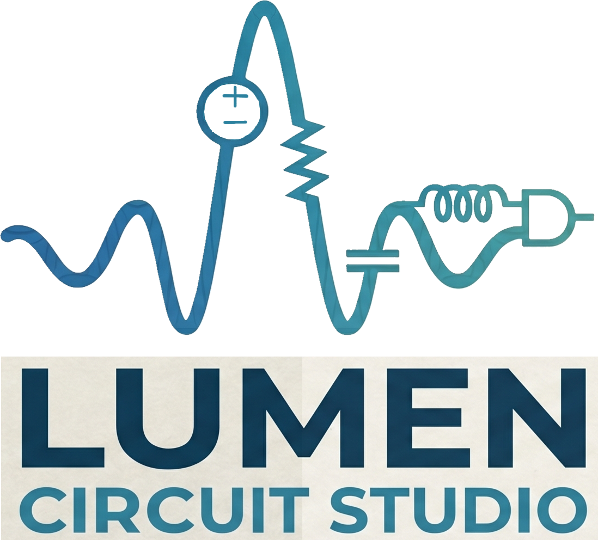
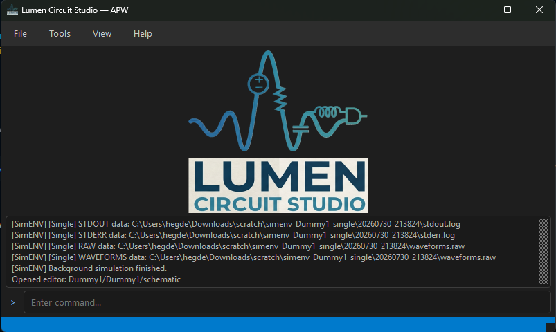
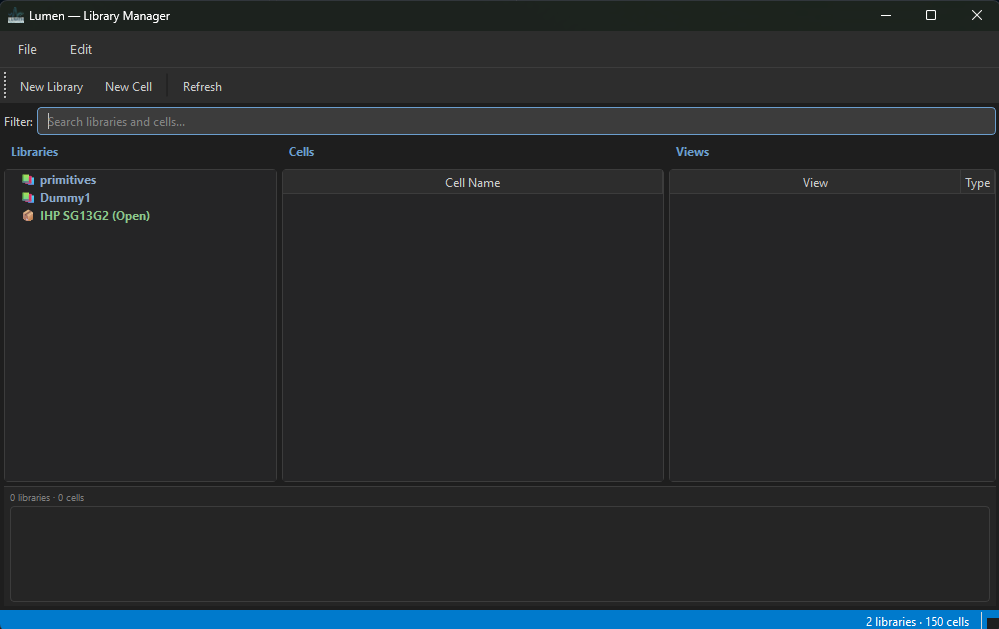
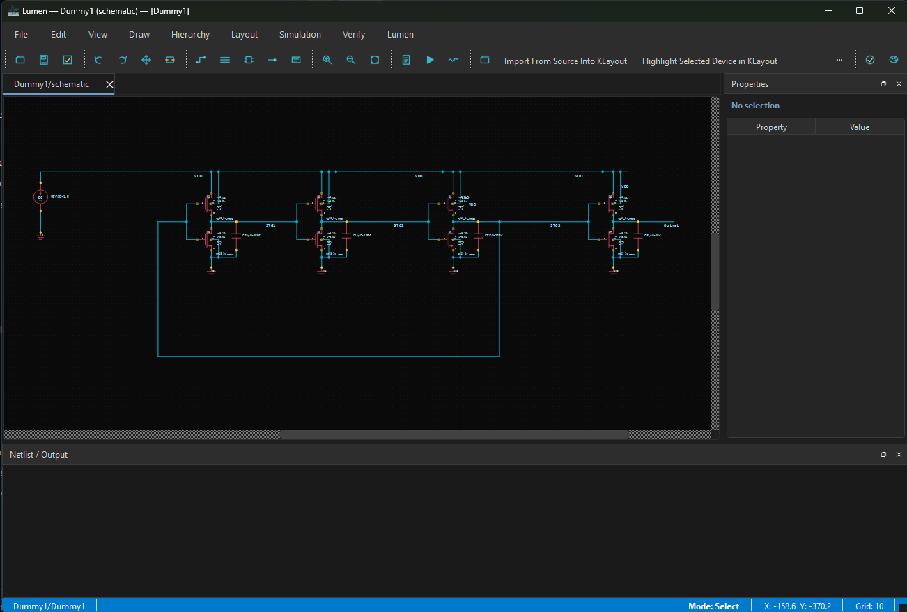
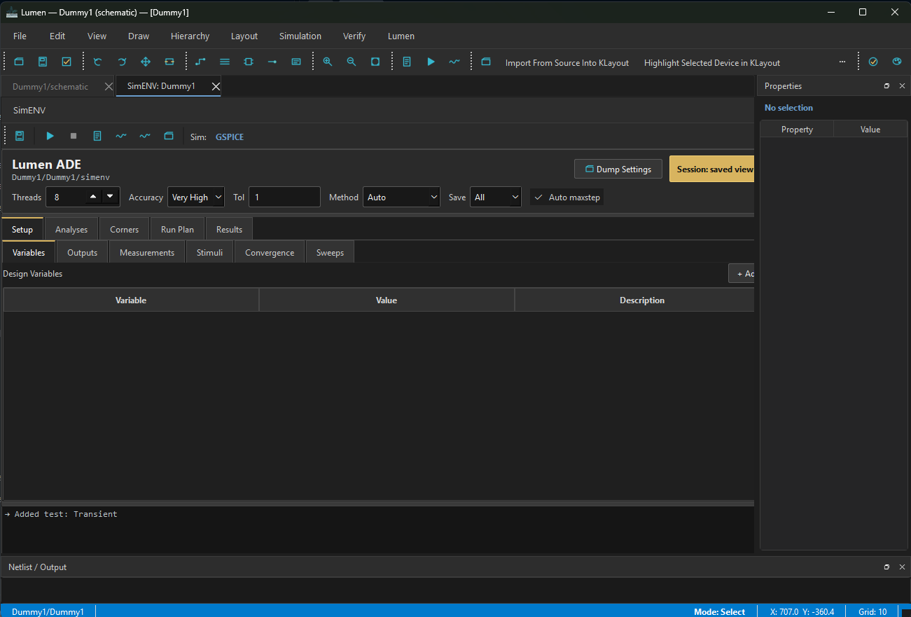
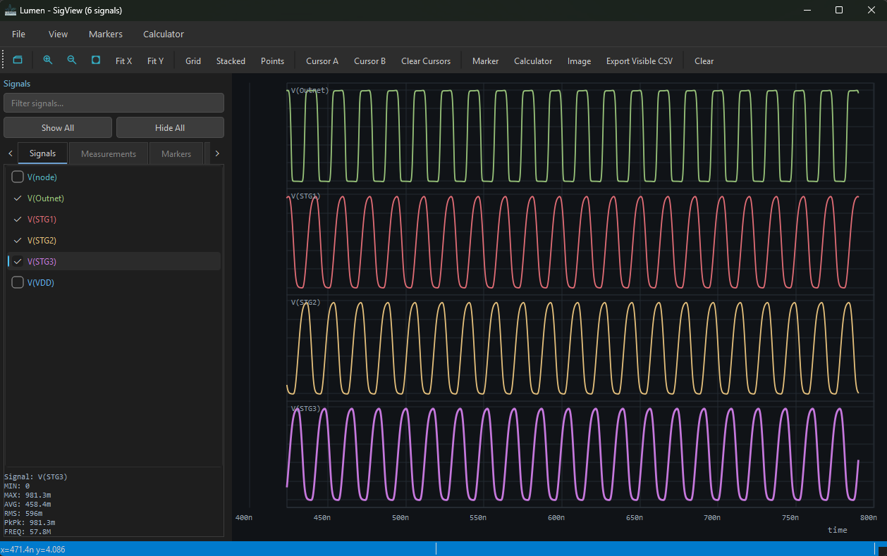

GSPICE — an open-source, parallel-accelerated SPICE engine built in C++17. Lumen Circuit Studio — a full-featured EDA workbench with schematic capture, symbol editing, PDK management, and an integrated simulation cockpit.
The Lumen Circuit Studio workbench — from the Analog Pilot Window to the waveform viewer.

The main hub — project context, command line, and output log for launching all tools.

Structured library, cell, and view database with the analog primitive catalog.

Hierarchical editing with wire routing, instance placement, rotate/mirror, labels, and pins.

Simulation cockpit for analyses, corners, sweeps, and run folders — bridged to the GSPICE engine.

Interactive SigView with zoom, cursors, measurement markers, and export.
GSPICE delivers industrial-grade simulation speed. Lumen Circuit Studio provides a complete schematic-to-layout EDA experience.
Multi-threaded device evaluation and matrix stamping with OpenMP. Scales to 16 threads.
Native Open Simulation Device Interface host. Load BSIM4, PSP, HICUM models dynamically.
PSS (shooting method), Harmonic Balance, S-Parameters, PAC, PNOISE, HBAC, HBNOISE.
Industry gold-standard sparse matrix solver for large circuit simulations.
OP, TRAN, AC, NOISE, PSS, HB, SP, PAC, PNOISE, STB, MC, DC sweeps, corners, and more.
Deterministic Gaussian/uniform sampling with Latin-hypercube option.
BDF through order 5, trap ringing damping, adaptive step/order, charge-aware LTE.
G-min stepping, Newton-Raphson damping, verified against Level-50 industrial models.
Hierarchical capture with wire routing, instance placement, rotate/mirror, labels, pins.
Manual and auto-generated symbols with drawing tools, pin editing, and schematic sync.
Structured library, cell, and view database with analog primitive catalog.
Integrated setup for simulation analyses, corners, sweeps, and run folders.
Interactive SigView with zoom, cursors, measurement markers, and export.
Process Design Kit discovery, model parsing, and bundled open PDK integration.
Parameterized devices, schematic/device correspondence, DRC/LVS flow, and GDS export.
SPICE netlist generation and direct GSPICE simulator bridge for seamless simulation.
RAII, templates, and policy-based design for extensible device modeling.
Multi-threaded device evaluation and matrix stamping up to 16 threads.
Industry gold-standard sparse solver for large circuit simulations.
Native host for BSIM4, PSP, HICUM compact models.
Responsive desktop interface for cross-platform circuit design workflows.
PSS, HB, PAC, PNOISE, and envelope following analysis.
Open PDK support with parameterized devices, DRC/LVS flow, and GDS export.
Gaussian/uniform sampling with Latin-hypercube support.
These steps are written for circuit design engineers who want to get from a clean machine to schematic capture and simulation. Pick your operating system and follow the numbered flow.
install-windows.ps1 using the button on the right.[OK] or [MISSING] for each prerequisite and asks before installing anything missing with winget.powershell -ExecutionPolicy Bypass -File .\install-windows.ps1
cd "$HOME\lumen-gspice\Lumen_Circuit_Studio" $env:QT_QPA_PLATFORM = "windows" .\.venv\Scripts\pythonw.exe -m lumen
install-macos.sh using the button on the right.[OK] or [MISSING] for each prerequisite and asks before installing anything missing with Xcode tools/Homebrew.chmod +x install-macos.sh ./install-macos.sh
cd "$HOME/lumen-gspice/Lumen_Circuit_Studio" . .venv/bin/activate export QT_QPA_PLATFORM=cocoa python -m lumen
install-linux.sh using the button on the right.[OK] or [MISSING] for each prerequisite and asks before installing anything missing with apt, dnf, or pacman.chmod +x install-linux.sh ./install-linux.sh
cd "$HOME/lumen-gspice/Lumen_Circuit_Studio" . .venv/bin/activate export QT_QPA_PLATFORM=xcb python -m lumen
Windows: $HOME\lumen-gspice\GSPICE\build-vs2022\Release\gspice.exe macOS: $HOME/lumen-gspice/GSPICE/build/gspice Linux: $HOME/lumen-gspice/GSPICE/build/gspice
If Windows was built from a Developer PowerShell instead, also check GSPICE\build\Release\gspice.exe.
If CMake reports nmake is missing, download the latest Windows installer from this page and rerun it. The updated script uses a Visual Studio build folder named build-vs2022.
For the bundled open flow, select the included PDK, install it, then set it active before creating the first library or schematic.
After adding GSPICE and activating a PDK, create or open a small RC schematic, open the simulation environment, choose a transient analysis, run GSPICE, and open the RAW or CSV result in SigView. That verifies the schematic-to-simulator-to-waveform path.
git clone https://github.com/hegdeshreesha/GSPICE.git cd GSPICE cmake -S . -B build cmake --build build --config Release ctest --test-dir build -C Release --output-on-failure
git clone https://github.com/hegdeshreesha/Lumen_Circuit_Studio.git cd Lumen_Circuit_Studio python -m venv .venv # Windows: .\.venv\Scripts\Activate.ps1 # macOS/Linux: . .venv/bin/activate python -m pip install -r requirements.txt python scripts\verify_environment.py # Windows: $env:QT_QPA_PLATFORM = "windows" # macOS: export QT_QPA_PLATFORM=cocoa # Linux: export QT_QPA_PLATFORM=xcb # Windows GUI launch: .\.venv\Scripts\pythonw.exe -m lumen python -m lumen
Contributions, bug reports, and feature requests welcome. Star the repo, open an issue, or submit a PR.